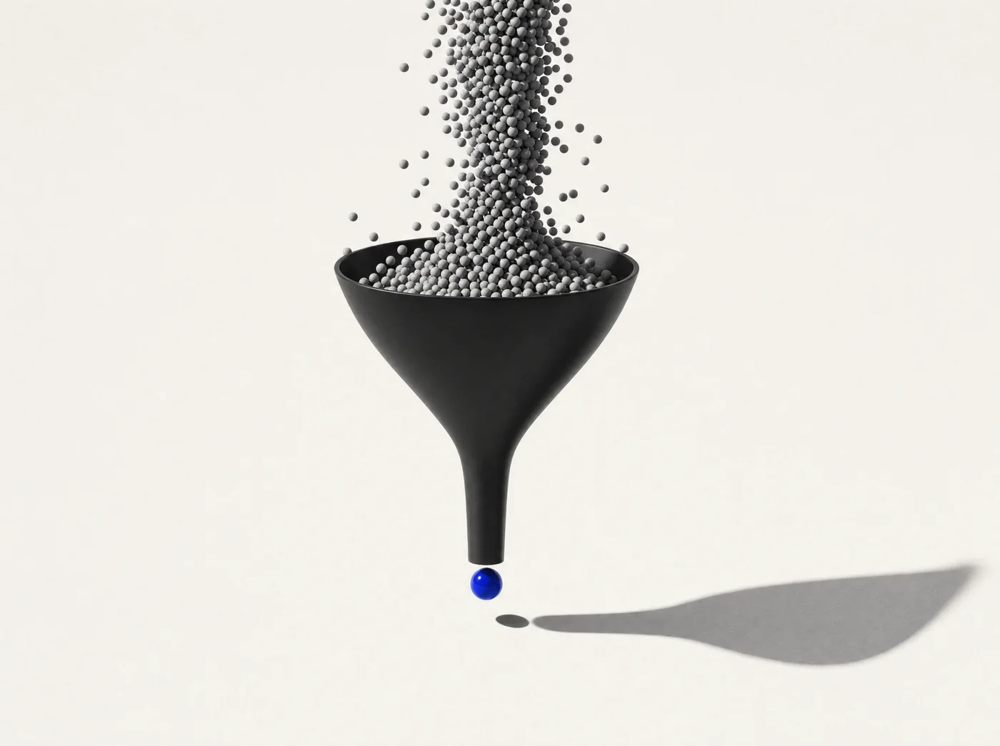

«кто ведёт директ для клиник», «посоветуйте агентство на SEO»
8 созвонов, 11 карточек из Threads
Before ловит запросы в Telegram и Threads, пока их не увидели конкуренты, и кладёт карточку вашему менеджеру в бота.
Слева чаты, где пишут клиенты. Справа Telegram вашего менеджера: карточка приходит через минуту после сообщения.
Демонстрация: лента сообщений из публичных чатов Telegram и постов Threads. Before выделяет запрос покупателя и превращает его в карточку лида с черновиком первого сообщения для менеджера.
Столько шума в общих чатах. Before ищет там, где пишут «ищу».

Пять шагов от заявки до первого запроса. От вас бриф и вердикты по карточкам, остальное делаем мы.
Оставляете контакт, мы пишем в Telegram в течение трёх часов. За 15 минут разбираем, что продаёте, кому и где, и подбираем тариф. После оплаты уточняем детали: кому слать карточки, какой бюджет клиента считать нормальным.
Доступы к вашим аккаунтам не нужны. Скан идёт с отдельного аккаунта Before.
Переводим анкету на язык ваших клиентов: как они формулируют запрос, что считать шумом. Подбираем чаты и каналы, где такие запросы реально пишут, и поисковые фразы для Threads.
Список источников и сигналов присылаем вам на согласование до запуска.
Отдельный аккаунт Before читает публичные чаты и каналы Telegram, а в Threads ищет посты по ключевым фразам через официальный API. Каждое сообщение оценивается по контексту: ключевое слово само по себе не лид.
Только чтение. Аккаунт не пишет, не вступает в чаты и не подписывается.
Как только появляется запрос, бот Before присылает карточку: текст и ссылку на сообщение, автора, источник, оценку совпадения и черновик первого сообщения под этот запрос.
Менеджер нажимает «В работе», чтобы коллеги видели, кто ведёт, и пишет клиенту сам, от своего имени.
На каждой карточке две кнопки: «В тему» или «Мимо». По вашим вердиктам выдача подстраивается, но бриф остаётся главнее. Раз в месяц пересматриваем источники: шумные убираем, новые добавляем.
Раз в неделю бот присылает дайджест: сколько нашли, сколько в работе, сколько отсеяли и почему.
Разные ниши, одна механика: чаты и посты, где клиент пишет «ищу», и карточка менеджеру за минуту. Цифры за первый месяц работы.
«кто ведёт директ для клиник», «посоветуйте агентство на SEO»
8 созвонов, 11 карточек из Threads
«ищу поставщика под маркетплейсы», «кто везёт карго с растаможкой»
3 партии ушли в расчёт, 5 запросов из Threads
«подскажите юриста по банкротству», «приставы списывают, что делать»
31 карточка за месяц, 7 консультаций
«ищу квартиру у моря под сдачу», «посоветуйте риелтора в Сочи»
6 показов назначено, 9 запросов из Threads
«посоветуйте психолога, который работает с тревогой», «ищу коуча по выгоранию»
12 из Threads: о личном там пишут постами, а не в чатах. 5 первых сессий
«нужен бухгалтер для ИП на УСН», «кто закрывает отчётность за неделю»
4 договора, пик запросов за две недели до отчётности
Подписка на месяц, настройка под нишу входит в каждый тариф. Сначала короткий разговор, потом оплата, через два-три дня после неё пошли карточки. Отмена в любой момент.
10 000 ₽в месяц
Проверить, пишут ли ваши клиенты в Telegram: одна услуга, один город.
Перейти на Pro можно с любого дня, перенастройка не нужна.
25 000 ₽в месяц
Отдел продаж из двух-трёх человек, несколько услуг или городов.
Порог бюджета, анти-сигналы и гео настраиваем под каждое направление отдельно.
50 000 ₽в месяц
Несколько продуктов и большой отдел. Нужен поток, а не проверка гипотезы.
Под несколько брендов или юрлиц собираем отдельные контуры.
Одна услуга для одной аудитории в одном гео. «Директ для клиник в Москве» одно направление, «Директ и SEO для клиник» уже два.
Чат или канал в Telegram либо поисковая фраза в Threads. Подбираем их мы, вы согласовываете список до запуска.
Оплата после разговора, картой или по СБП, ссылку пришлём в Telegram. Отменить можно в любой момент, следующий месяц не списывается.
Не уверены, какой тариф ваш? Оставьте контакт, разберём за 15 минут и подскажем.
Оставьте контакт. Напишем в Telegram в течение 3 часов, за 15 минут разберём вашу нишу и подберём тариф. Без звонков по скрипту, просто разговор.
Нет. Before только читает. Клиенту пишет ваш менеджер, сам и от своего имени.
Нет. От вас бриф и никнеймы менеджеров, которым слать карточки.
Зависит от ниши. Честную оценку дадим после разговора, до запуска. Если ваших клиентов там нет, вернём деньги.
В любой момент. Следующий месяц не списывается.